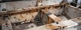
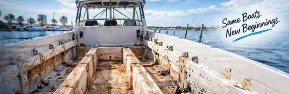
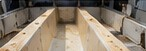
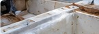
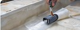
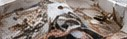
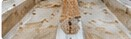
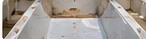
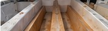
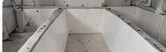

Stringer Inspection
Thorough inspection to identify damage, moisture and structural concerns.
Learn More
When damaged or weakened stringers compromise your boat’s structure, we rebuild the foundation beneath your deck. Expert fiberglass stringer repair throughout Tampa Bay.

Stringers are the longitudinal structural members that run through the hull, supporting your deck, floors, engines and overall load. When stringers are damaged by water intrusion, rot, or stress, it can affect your boat’s performance and safety.
Moisture can break down wood or foam cores over time.
Layers can separate from impact, flex or age.
A spongy feeling can indicate failing stringers.
Repeated loads can cause cracks and structural fatigue.
Old or improper repairs can lose strength.
We fix and improve past repairs done the wrong way.
From small repairs to full stringer replacement, we tailor the repair to your boat, its construction, and how you use it.

Thorough inspection to identify damage, moisture and structural concerns.
Learn More


Rebuild and laminate with high-strength fiberglass and marine resin.
Learn More
Our team carefully inspects your boat’s structure to determine the extent of damage and the best repair method. We use a combination of visual inspection, tapping and listening, checking for flex, and inspecting all accessible areas.
We inspect the hull, stringers and surrounding structure.
Identify soft spots, moisture and delamination.
We recommend the right repair based on your boat and its construction.
You’ll get a clear explanation of the repair and next steps.
We follow proven fiberglass repair techniques and use high-quality, marine-grade materials to ensure a durable, long-lasting repair.

Remove the deck and damaged stringer material to expose solid structure.
Grind, clean and prepare the surface. Replace wood or foam core as needed.

Apply marine-grade fiberglass, resin and core materials to rebuild the stringer.

Fair the repair, seal the surfaces and prepare for reassembly.
Take a look at real fiberglass stringer repairs from boats we’ve worked on in Tampa Bay.

New Stringers
AfterOver 50 years of fiberglass repair experience. We handle structural fiberglass work from localized repairs to major rebuilds and proudly serve Tampa Bay, Largo, St. Petersburg, Clearwater and all of Pinellas County.
Stringers are the long structural beams that run fore and aft inside the hull. They stiffen the bottom, carry the deck and floor, and spread engine and wave loads across the hull. On most production boats they are wood or foam cores wrapped in fiberglass.
Common signs are a soft or flexing deck, cracks in the gelcoat along the floor or hull, water that keeps turning up in the bilge, engine mounts that won’t stay aligned, and a boat that pounds or flexes more than it used to. Moisture readings and a tap test during an inspection confirm it.
Often, yes. When damage is localized and the surrounding core is dry and sound, we cut out the bad section, scarf in new material and relaminate it. When rot has spread along the length of the stringer, full replacement is the stronger and more cost-effective repair. The inspection tells us which one you need.
It depends on how much of the deck has to come up and how far the damage runs. A localized repair can take days; a full stringer replacement on a larger boat can take several weeks. We give you a timeline with the repair plan, before any work starts.
Yes. We only open up as much of the deck as the repair needs, and access through hatches or inspection ports wherever we can. The rest of the boat stays as it is.
Both. We replace rotted wood with marine-grade core or upgrade to rot-proof composite or foam cores, then glass them in with marine resin and fiberglass matched to the load the stringer carries.
We come to you for inspections and many repairs across Largo, Clearwater, St. Petersburg and the rest of Pinellas County. Major stringer rebuilds are usually done at our Largo boat yard, where the boat can be supported and the work kept dry.
Based in Largo, Florida, we proudly serve boaters throughout Pinellas County, Tampa Bay and surrounding areas.
Send us photos of the damage or schedule an inspection and we’ll help determine the next step.
Have a soft or flexing deck, a stringer you’re worried about, need a quote, or ready to schedule? Fill out the form or give us a call — we’ll get back to you as soon as possible. Your boat deserves the best, and we’re here to make it happen.
Tell us a little about your project and we’ll get back to you quickly.